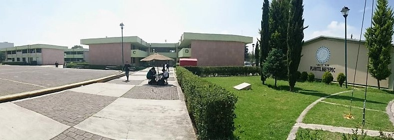
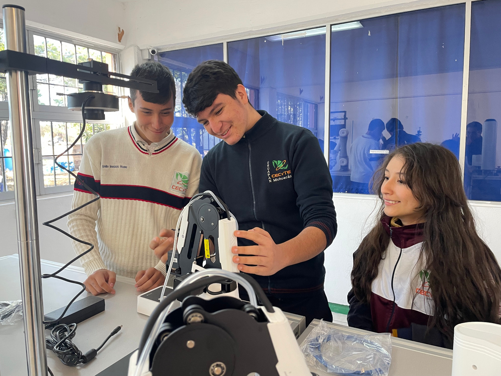
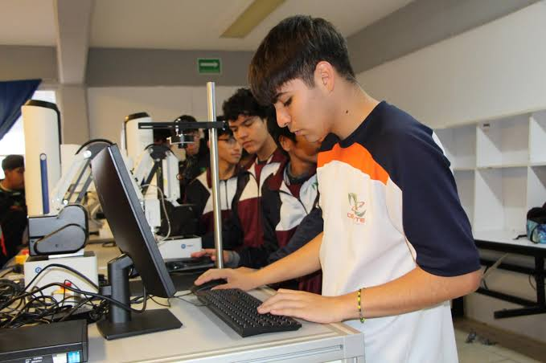
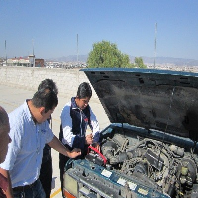

La carrera de Técnico en Mecatrónica ofrece las competencias profesionales que permiten al estudiante realiz

La carrera de Técnico en Instrumentación Industrial ofrece el desarrollo y la adquisición de competencias profesional

La carrera de Técnico en Mantenimiento Automotriz ofrece las competencias profesionales que permiten al estudiantese imparte de forma destacada en el Plantel Metepec, y prepara a los estudiantes para dar servicio a automóviles modernos en áreas mecánicas, eléctricas y electrónicas.

La carrera de Técnico en Programación ofrece las competencias profesionales que permiten al estudiante realizar actividades te prepara para analizar, diseñar, desarrollar, instalar y mantener software de aplicación según las necesidades de los usuarios